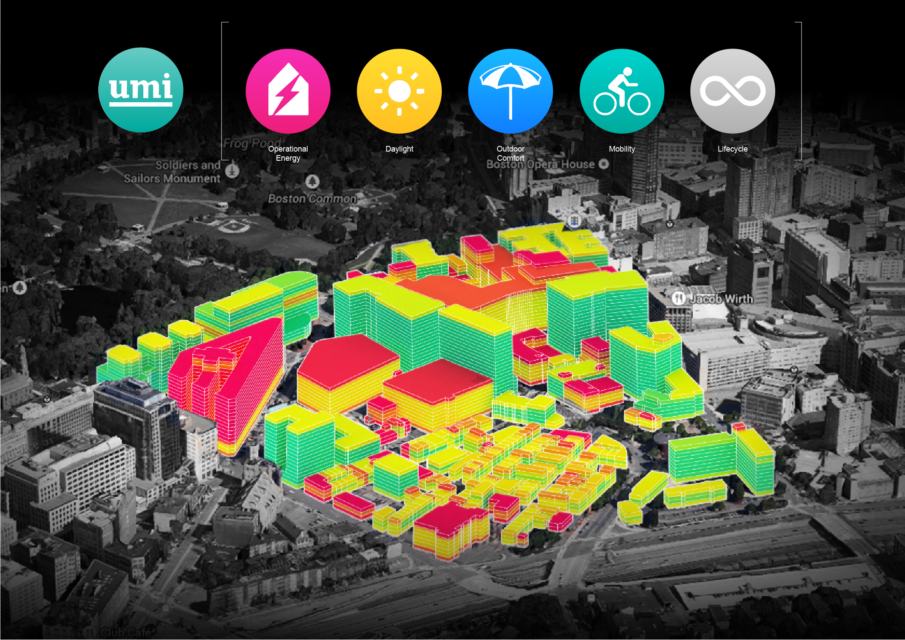

Workflow for UMI-E+ Data Integration
Built a scalable Python pipeline to automate geometric data extraction from 3D models of downtown Des Moines. Generated 50k+ files with tree parameters for shading/moisture analyses, streamlining urban energy simulations. Presented at NCUR (Long Beach, CA).